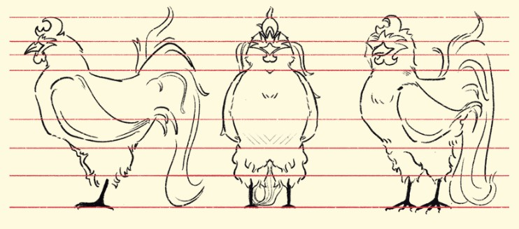

Gallus
Descripción
Hubo un tiempo en el que Gallus era un líder entre las aves, un gallo orgulloso que dominaba con su fuerte canto y presencia imponente. Sin embargo, mientras los demás pájaros vivían en armonía, él ansiaba algo más: poder absoluto. Gallus despreciaba la libertad con la que las aves menores volaban. Veía el mundo como un caos sin orden ni liderazgo fuerte. “Las aves desperdician su existencia en cantos inútiles y vuelos sin propósito”, pensaba. Un día, en su obsesión por la supremacía, se adentra en lo más profundo del bosque encantado, donde encontró un antiguo altar prohibido. Allí, una fuerza oscura le susurró promesas de poder. A cambio de su alma y su corazón, la oscuridad le concedió control sobre las sombras y la capacidad de dominar a todas las aves. Gallus aceptó sin dudar. Con su nuevo poder, selló el cielo en penumbras, capturó a todas las aves y las encerró en jaulas encantadas, asegurándose de que nadie volviera a volar sin su permiso. Para él, no se trataba solo de venganza, sino de orden y control absoluto. Pero un ave escapó… Pickle. El pequeño cuervo representa todo lo que Gallus odia: la libertad, la voluntad de desafiar el destino y el deseo de volar sin ataduras. Sabe que Pickle viene a desafiar su reinado… y hará todo lo posible por destruirlo
Model Sheet
Diseño base del personaje usado como guía de modelado y animación.
Concept Art
Visualización del estilo artístico inicial y expresividad del personaje.
Explora el modelo en 3D
Usa el mouse para rotarlo y hacer zoom.